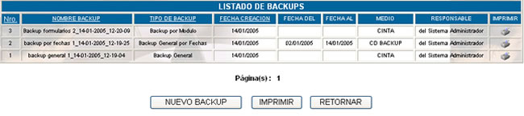
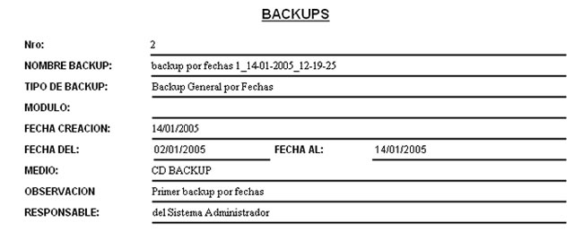
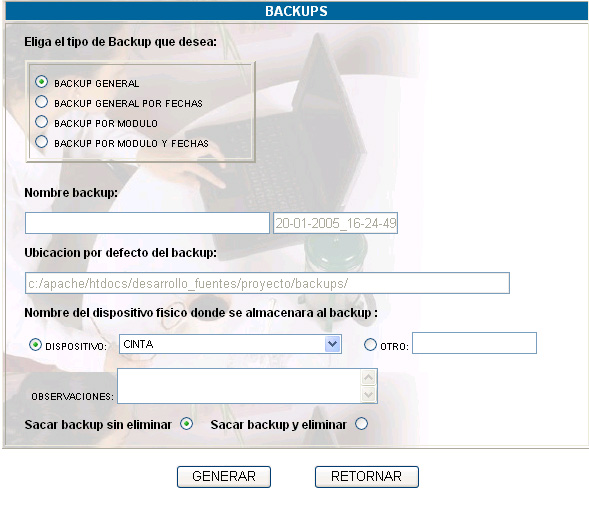
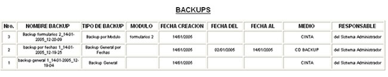

BACKUPS
Al hacer click sobre esta opción usted podrá
ver la lista de backups realizados.

Nro.; número
correlativo que nos indica el número de backup.
Nombre backup; nos indica el nombre del backup.
Tipo de
Backup; indica el tipo de backup realizado,
que podrá tomar los siguientes valores: Backup General, Backup General
por fechas, Backup por módulo y Backup por módulo y fechas.
Fecha de creación; indica la fecha de creación
del backup.
Fecha del; indica la fecha inicial de
los registros para la creación del backup por fechas.
Fecha al; indica la fecha final de los
registros para la creación del backup por fechas.
Medio; indica el medio en el cual
se almacenará el backup.
Responsable; indica el responsable de la creación del backup.


Tipo de
Backup; indica el tipo de backup realizado,
que podrá tomar los siguientes valores: Backup General, Backup General
por fechas, Backup por módulo y Backup por módulo y fechas.
Nombre backup; nos indica el nombre del backup.
Ubicación
por defecto del backup; muestra
la ubicación donde se creará el backup, esta opción no
es configurable.
Nombre del dispositivo
físico donde se almacenará el backup; indica si se usará un dispositivo registrado
en el sistema previamente como Dispositivo de Backups u Otro dispositivo.
Sacar backup y eliminar;
esta opción permite sacar un backup eliminando
los archivos físicamente.
Imprimir; haciendo click en este botón,
se podrá obtener un reporte de los datos de todos los backups realizados.
